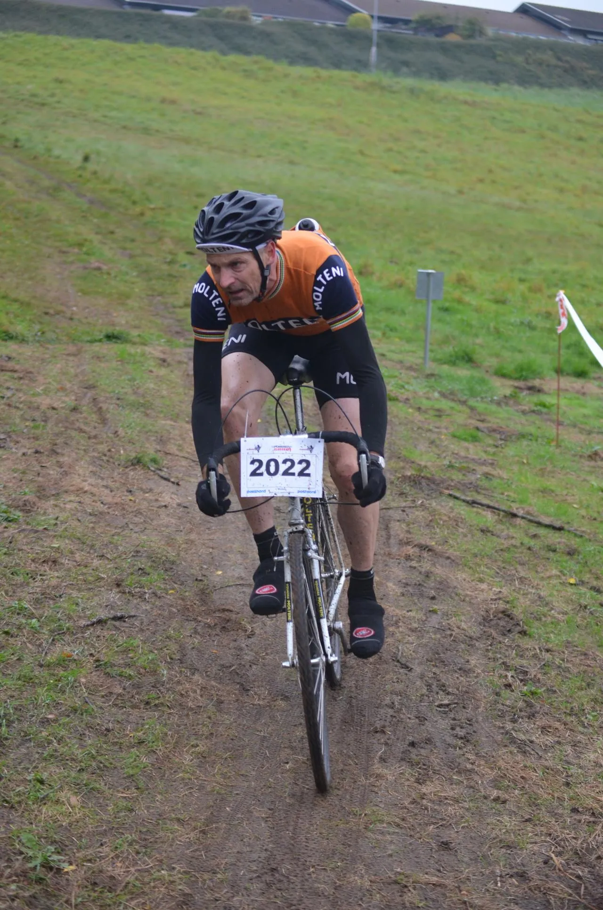

MTB Klassikeren Vejle på stål-crosser og i uld

Squadra Moltenis Niels Bjørnsteen stillede i dag til start ved mountainbikeløbet MTB Klassikeren Vejle.
Den gamle stålcrosser fik én over nakken og terrænet slog igen. Men Bjørnsteen fik kæmpet sig til en 8. plads i det 75 mand store mountainbikefelt på 22 km distancen.
